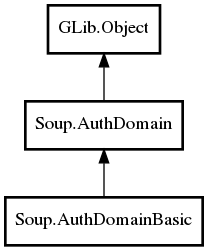

Soup.AuthDomainBasic Reference Manual
Packages
libsoup-2.4
Soup
AuthDomainBasic
auth_callback
auth_data
set_auth_callback
AuthDomainBasic
AuthDomainBasic
Object Hierarchy:

Description:
public
class
AuthDomainBasic
:
AuthDomain
Namespace:
Soup
Package:
libsoup-2.4
Content:
Properties:
public
void
*
auth_callback
{
set
;
get
; }
public
void
*
auth_data
{
set
;
get
; }
Static methods:
public
static
void
set_auth_callback
(
AuthDomain
domain,
owned
AuthDomainBasicAuthCallback
callback)
Creation methods:
public
AuthDomainBasic
(
string
optname1, ...)